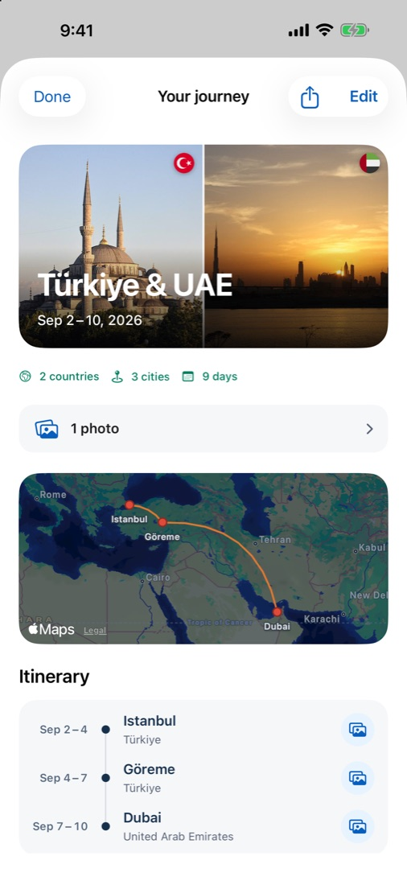
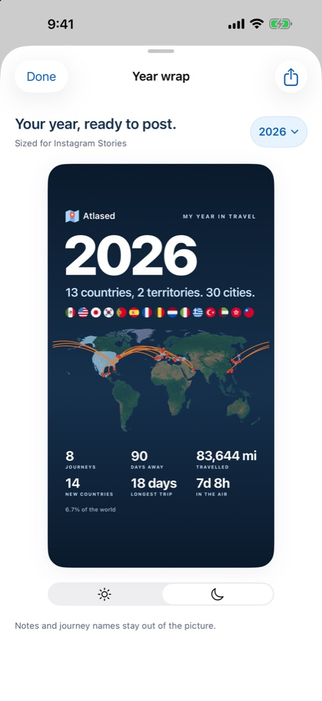

Atlased
AtlasedEverywhere you've ever been.
Atlased finds your trips in the photos already on your iPhone, then turns them into a journal worth keeping. Every country, every city, every journey — in about a minute.
Your photos already know.
Every photo keeps the place and the day it was taken. Atlased reads just that — on your iPhone — and rebuilds years of travel: the trips, the cities, the way there and back.

An example journal. Yours appears the first time you open Atlased.
Every trip, rebuilt for you.
Each journey keeps its stops in order, its dates and its photos. Flights and hotel stays from your calendar fill in how you got there and where you slept.
- Trips found automatically — nothing to type.
- Small towns named right, not just the nearest big city.
- Notes, covers and your own photo albums.

Your world, on a globe.
Every country and city you've reached, lit up on a 3D globe or a flat map. See how much of the world is yours — and keep a wishlist for what's next.
- Countries, cities and territories, counted properly.
- Search a city to see how many times you've been.
- A wishlist for the places still waiting.
Your year, wrapped.
The countries, the cities, the miles flown and the flags you collected — in one picture made for your Stories. Notes and journey names stay out of it.
- Light and dark styles.
- Any year, or all of them.
- Made on your iPhone, shared only when you choose.

Your journal stays yours.
No account, no server, no ads. Atlased works on your iPhone, and nothing leaves it unless you share it.
On your iPhone
Trips are found on the device. Your photos are never uploaded.
No account
Open it and start. Nothing to sign up for, nothing to log into.
No ads, no tracking
No analytics, no ad networks. Just your travels.
Works offline
Your journal is always there, even on a plane.
Start with the trips you've already taken.
Atlased arrives on the App Store on November 20.